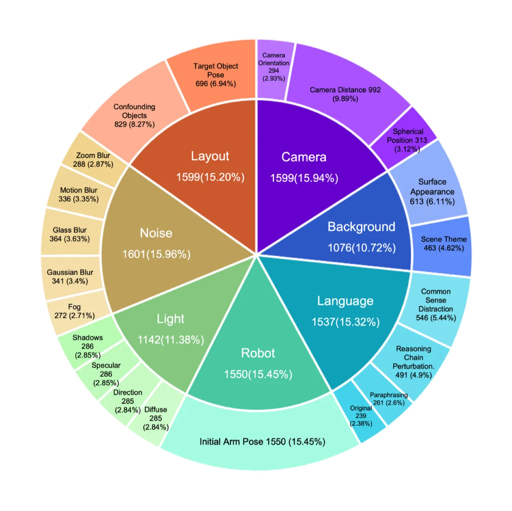
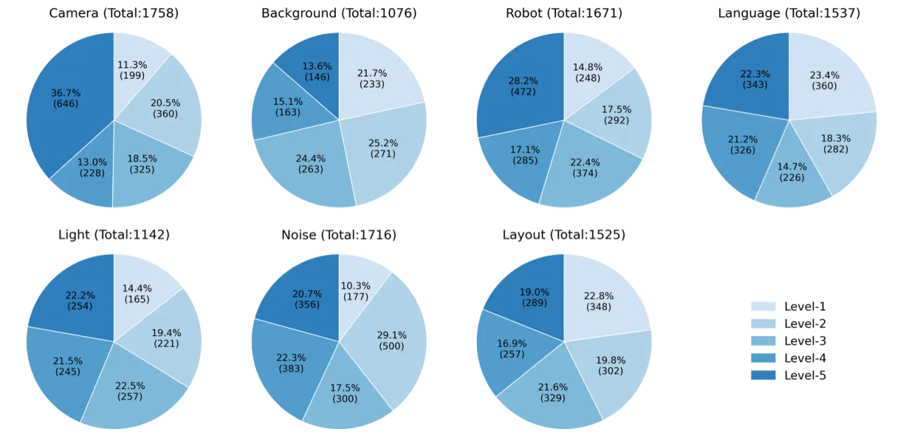
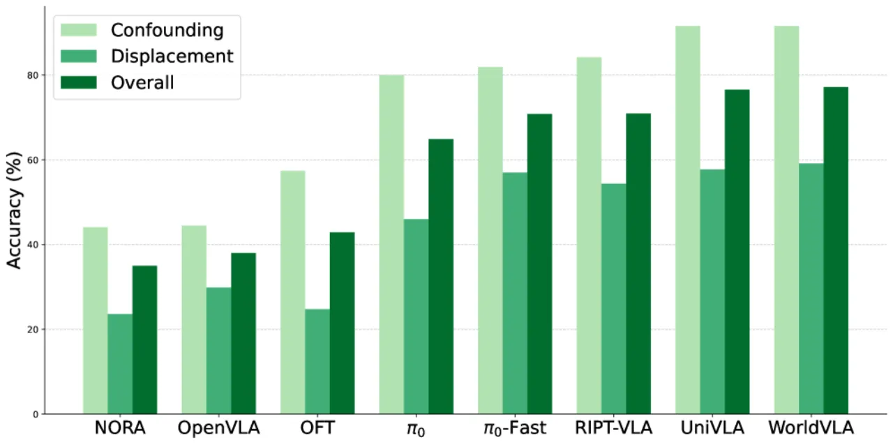
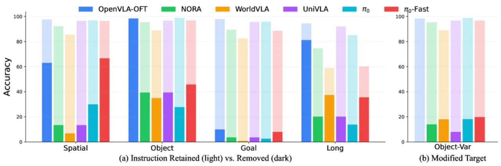
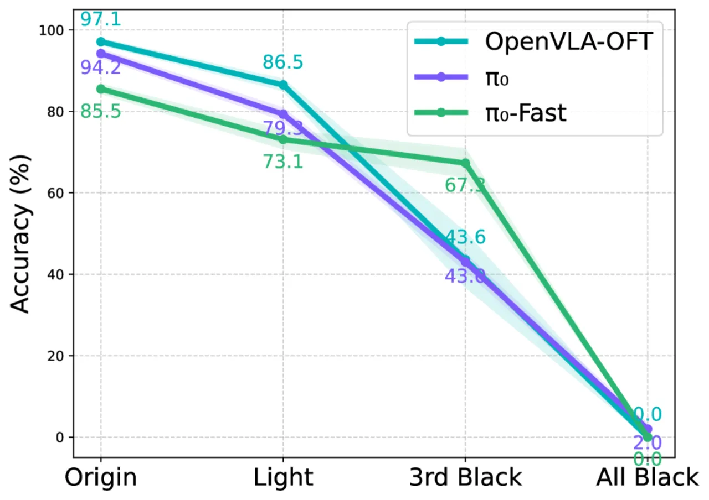
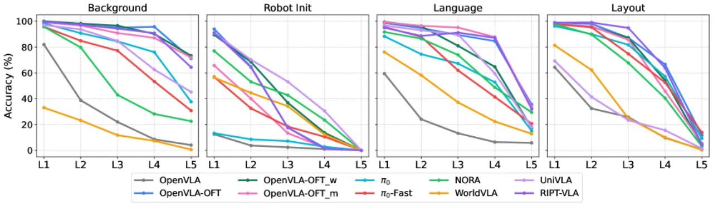

当前 VLA（Vision-Language-Action）模型在机器人操作基准上报告了令人印象深刻的成功率，但这些高分可能掩盖了模型在真实部署场景中的脆弱性。本文系统构建了 LIBERO-Plus 基准，覆盖 7 个扰动维度、21 个子维度，共 10,030 个任务，对 10 款主流 VLA 模型进行深度评估，发现成功率可从 95% 骤降至 30% 以下。
VLA 模型在标准机器人操作基准上屡创新高，然而这些基准场景高度受控，难以反映真实部署环境中的变化。当摄像头视角、场景光照、背景纹理或语言描述稍作调整，模型性能会如何变化？现有研究缺乏对多维度扰动的系统性探索。
"Visual–Language–Action (VLA) models report impressive success rates on robotic manipulation benchmarks, yet these results may mask fundamental weaknesses in robustness."

现有机器人操作基准（如 LIBERO、AGNOSTOS、COLOSSEUM 等）在扰动维度覆盖、细粒度分析和自动化生成等方面存在明显不足。LIBERO-Plus 正是为弥补这一空白而设计：在标准 LIBERO 场景基础上，自动化地注入 7 类扰动并按难度分级，从而构建可重复、可扩展的鲁棒性评估框架。
LIBERO-Plus 在 LIBERO 模拟环境基础上，系统设计了 7 个扰动维度的注入机制，并引入 5 级难度分层和组合扰动分析框架，用于评估模型的单维度鲁棒性与跨维度泛化能力。
每个扰动维度按扰动强度由弱到强划分为 5 个难度等级（Level-1 至 Level-5）。Level-1 代表最小可感知扰动，所有参考模型均可通过；Level-5 代表最强扰动，所有模型均失败。难度分级保证了基准的区分度，同时便于分析各模型的"鲁棒性边界"。

为量化不同扰动间的交互效应，本文引入组合泛化差距（Compositional Generalization Gap）指标：
Δᵢⱼ = Cov(Dᵢ, Dⱼ | Y=1)
通过对 2,000 次双维度扰动的试验进行协方差分析，发现一致性负差距（negative gap），说明扰动并非独立叠加，而是存在耦合交互效应，共同暴露了模型表征中的纠缠问题（entanglement in the learned representations）。
实验评估了 10 款主流 VLA 模型：OpenVLA、OpenVLA-OFT（3个变体）、π₀、π₀-fast、Nora、WorldVLA、UniVLA、RIPT-VLA，涵盖自回归、扩散、世界模型和强化学习等不同训练范式。每个模型在各扰动维度的多个子任务上运行 100 次。
| 模型 | 原始成功率 | Camera ↓ | Robot ↓ | Language ↓ | Light ↓ | Background ↓ | Noise ↓ | Layout ↓ |
|---|---|---|---|---|---|---|---|---|
| OpenVLA | 76.5% | -75.4 | -72.4 | -49.7 | -72.1 | -51.2 | -57.2 | -44.9 |
| OpenVLA-OFT | 97.1% | -37.4 | -59.9 | -15.6 | -11.3 | -4.7 | -20.4 | -20.0 |
| π₀ | 94.2% | -78.4 | -87.6 | -33.2 | -14.6 | -15.7 | -14.8 | -23.8 |

摄像头视角变化和机器人初始状态扰动导致成功率大幅下降，平均降幅远超其他维度。π₀ 在摄像头扰动下降幅高达 -78.4%，在机器人初始状态扰动下降幅达 -87.6%。相比之下，配备腕部摄像头的 OpenVLA-OFT 在摄像头扰动下仅下降 -37.4%，说明多视角输入可显著提升视觉鲁棒性。

"VLA models do not possess strong cross-object instruction-following generalization… they rely on fixed vision–action mappings rather than fully exploiting language signals in task decision-making."
语言扰动平均仅导致 -25.3% 的下降（各维度中最小），但这并非因为模型具有语义鲁棒性——空指令实验证明模型根本未有效利用语言输入。语言维度的"低敏感性"实为语言信号被忽视的体现。

在 20,000+ 条覆盖多种扰动的轨迹数据上对 OpenVLA-OFT 进行微调后（8× A100，100,000 步，学习率 5×10⁻⁴），LIBERO-Plus 总成功率从 67.9% 提升至 79.5%（+11.6pp）。摄像头维度改善最显著（55.6% → 92.8%，+37.2pp），机器人状态维度改善相对有限（21.7% → 30.3%，+8.6pp）。

在双维度组合扰动实验（2,000 次试验）中，实际联合成功率始终低于独立假设下的预期值（Δᵢⱼ < 0），证明不同类型的扰动存在负向交互效应。这意味着模型泛化能力具有内在不可分解性（intrinsically non-decomposable），单维度评估无法预测真实场景中的综合性能。
LIBERO-Plus 完全在 LIBERO 模拟环境中构建，所有扰动（光照、背景、传感器噪声等）均通过仿真生成。真实机器人场景中的物理噪声、光学畸变和未见物体的多样性远超仿真范畴，模拟结论能否迁移至实物部署仍需进一步验证。（论文明确指出为未来工作方向）
所有测试任务均基于 LIBERO 原有的桌面操作场景，场景多样性（物体类别、任务结构、桌面配置）相对有限。对于更复杂的双臂操作、移动机器人或开放世界任务，本基准的结论未必适用。（从任务设计推断）
提升鲁棒性的微调实验使用了与测试集同源的 20,000+ 条扰动轨迹。在分布外（out-of-distribution）场景下，这种数据驱动的鲁棒性提升效果可能大幅缩水，且不能说明模型习得了真正可组合的泛化能力。（从训练设置推断）
现有的语言扰动（改写/替换/推理链）主要测试句式层面的鲁棒性，对更复杂的语义组合（新颖物体-动作组合、空间关系理解、多步骤指令）覆盖不足。模型究竟在何种语义粒度上失败仍不明确。（从实验设计推断）